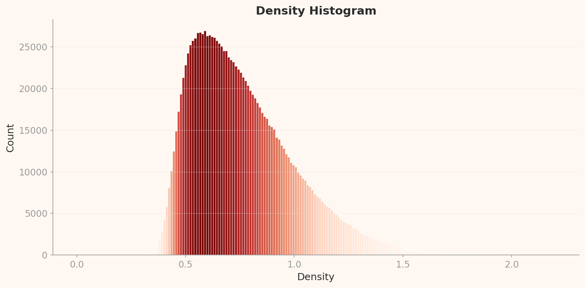

Evaluation Methodology
This report independently reinterprets DataClinic's three-level diagnostic results (Level I / II / III) through the lens of the ISO/IEC 5259-2:2024 Quality Measures (QM) framework. We mapped DataClinic's metrics and charts to each ISO QM definition and independently rendered Pass / Fail / Caution / N/A verdicts. For areas beyond DataClinic's reach — specifically label accuracy and semantic balance — we cross-referenced academic literature (Northcutt et al. 2021) and public class listings.
Summary: ImageNet (ILSVRC) is the 1,431,167-image, 1,000-class dataset that has underpinned the deep learning revolution since 2009. This report independently reinterprets DataClinic's score of 60 (Fair) through the ISO/IEC 5259-2:2024 Quality Measures (QM) framework. Of 12 QM items assessed, 5 received Fail, 4 Caution, 3 N/A, and 0 Pass. Key issues include the semantic imbalance of 120 dog breed classes, representativeness distortion dominated by peacocks in L2, approximately 85,870 mislabeled images validated by Northcutt et al. (2021), and biotic/abiotic skew in the feature space. DataClinic's 60-point score reflects technical attributes only; once semantic quality is factored in, the true quality is considerably lower.
1 Dataset Overview
ImageNet is the large-scale image recognition dataset built in 2009 by Fei-Fei Li's research team at Princeton and Stanford. It defines 1,000 visual categories (synsets) based on the WordNet lexical hierarchy and assigns labels through Amazon Mechanical Turk (AMT) crowdsourcing of web-crawled images. After AlexNet achieved its breakthrough performance at the ImageNet Large Scale Visual Recognition Challenge (ILSVRC) in 2012, every landmark deep learning model — VGGNet, GoogLeNet, ResNet, and beyond — was trained and validated on this dataset. It is, in effect, modern deep learning's textbook and the original source of pretrained weights that have propagated through thousands of downstream models via transfer learning.
Basic Information
| Dataset | ImageNet (ILSVRC) |
| Source | ImageNet.org (Princeton/Stanford) |
| First Released | 2009 |
| Total Images | 1,431,167 |
| Classes | 1,000 (WordNet synsets) |
| Mean per Class | 1,281.2 (std 70.2) |
| Sample Range | 732 – 1,300 |
| Resolution | 20×17 – 7,056×4,488 px |
| Channels | RGB 98.43% / Grayscale 1.57% |
| DataClinic Score | 60 / 100 (Fair) |
Semantic Class Distribution
| Category | Classes | Share |
|---|---|---|
| Dog breeds | 120 | 12.0% |
| Other animals (birds, reptiles, etc.) | ~200 | ~20% |
| Plants, food, nature | ~80 | ~8% |
| Artifacts (tools, machines, instruments) | ~450 | ~45% |
| Other (structures, scenes, etc.) | ~150 | ~15% |
* 120 dog breeds account for 12% of all classes — a structural bias

▵ ImageNet dataset sample collage — diverse visual categories across 1,000 classes
ImageNet's 1,000 classes were selected from WordNet's lexical hierarchy. This selection process over-represented biological taxonomies, resulting in 120 dog breed classes alone. It includes many fine-grained distinctions that even experts struggle with — Yorkshire terrier vs. silky terrier, Siberian husky vs. Alaskan malamute. Meanwhile, critical domains of human life such as healthcare, transportation, and architecture are represented by only a handful of classes. This structure effectively demands that a model become a "dog expert" while roughly classifying the rest of the world.
2 ISO/IEC 5259-2 Evaluation Framework
ISO/IEC 5259-2:2024 is the international standard for measuring the quality of data used to train AI/ML systems. This report maps DataClinic's three-level diagnostic results to the standard's Quality Measures (QM) and renders independent verdicts. We clearly distinguish between what DataClinic can and cannot measure, supplementing the latter with academic literature and public data.
| DataClinic Level | What It Measures | Mapped ISO 5259-2 QMs |
|---|---|---|
| Level I | Class count, sample count, missing values, pixel statistics, channel distribution | Con-ML-2, Bal-ML-1, Eft-ML-1 |
| Level II | Wolfram 1,280-dim embedding density, outliers, similarity | Rep-ML-1, Sim-ML-2, Div-ML-1 |
| Level III | BLIP image-text 122-dim density, cluster analysis | Rep-ML-3, Div-ML-1 |
DataClinic Can Measure
Pixel statistics, embedding density, outliers, class distribution, similarity pairs
DataClinic Cannot Measure
Label accuracy (6% error), cultural representativeness, semantic balance, PII
Verdict Criteria
Pass Meets criteria
Fail Below criteria
Caution Needs further review
N/A Currently unmeasured
3 Intrinsic Quality — Con-ML
| QM ID | Item | ISO Definition | Verdict |
|---|---|---|---|
| Con-ML-2 | Pixel Channel Consistency | Statistical distribution consistency of image channels | ⚠️ Caution |
ImageNet has zero missing values, with all 1,431,167 images properly mapped to their labels. Formal completeness is satisfactory. However, the L1 pixel histogram reveals a notable pattern. In the Blue channel, pixel value 255 exhibits an extreme spike of approximately 1.6 billion (1,600M) occurrences, with a second spike of roughly 830 million (830M) at pixel value 0. This reflects the structural characteristics of web-crawled imagery.
▵ L1 Pixel Histogram — Blue channel shows a ~1,600M spike at pixel=255 and a ~830M spike at pixel=0
🔍 Critical Reinterpretation D2: Blue Channel 255 Spike Unexplained
DataClinic API: "Statistics: Poor" — no specific cause given
In reality: Approximately 1.6 billion pixels are concentrated at Blue channel pixel=255. This suggests that sky and water backgrounds are over-represented in the web-crawled dataset. Outdoor photos with blue skies, pools, and ocean backgrounds are disproportionately present. The pixel=0 spike (~830M) is evidence of black backgrounds, padding, and camera auto-exposure clipping. This bias — making "photos with sky" disproportionately influential — increases the risk of models overfitting to brightness extremes. DataClinic flagged this only as "Statistics: Poor" without explaining the cause or implications of this extreme pattern.
Channel Composition Details
Of all images, 98.43% (1,408,698) are RGB and 1.57% (22,469) are grayscale. While 1.57% may seem negligible, the absolute count of 22,469 grayscale images processed through the same pipeline as RGB images can affect training quality. The resolution range is also extreme — from 20×17 to 7,056×4,488 pixels — making information loss or distortion during resizing unavoidable.
4 Balance Assessment — Bal-ML
| QM ID | Item | Finding | Verdict |
|---|---|---|---|
| Bal-ML-3 | Class Balance | Numerically 732–1,300 range, but severe semantic imbalance | ❌ Fail |
| Bal-ML-2 | Feature Space Balance | Cross-interaction of lens characteristics prevents isolated measurement | — N/A |
🔍 Critical Reinterpretation D1: Class Balance "Good" — The Numbers Trap
DataClinic API: "Low variance in per-class sample counts; consistency and balance are good" — Class Balance: Good
In reality: Standard deviation is 70.2, with a range of 732–1,300 images. Numerically, the smallest class is 56% of the largest — seemingly reasonable. But this "balance" conceals a severe semantic imbalance. Of 1,000 classes, 120 (12%) are dog breeds. Is this data meant to train an AI that distinguishes Yorkshire terriers from silky terriers, or one that simply recognizes "dog"? Numerical balance cannot answer this fundamental question. DataClinic compares only per-class sample counts and therefore cannot detect semantic redundancy or granularity imbalance among the classes themselves.
The 120 Dog Breed Dilemma
The fact that 120 of ImageNet's 1,000 classes (12%) are dog breeds is a consequence of mechanically following WordNet's biological taxonomy. It includes many fine-grained distinctions that even experts struggle with — Siberian husky vs. Alaskan malamute, Norfolk terrier vs. Norwich terrier. This structure demands that models become "dog experts" while the remaining 880 classes (musical instruments, furniture, food, vehicles — the entire breadth of human life) are each represented by a single class.
Dog Breeds (12%)
Yorkshire terrier, silky terrier, Norwich terrier, Norfolk terrier, Siberian husky, Alaskan malamute, Samoyed, Pomeranian, chow chow, keeshond... 120 total
The Rest of the World (88%)
piano (1 class), guitar (1), violin (1), flute (1), a handful of car types, a few dozen food types... the entire scope of human life compressed into 880 classes
Bal-ML-2 — N/A Rationale
The phenomenon where peacocks dominate in L2 while tarantulas dominate in L3 is a cross-interaction between data bias and lens characteristics. The fact that the same dataset yields entirely different "typical images" under different lenses means that feature space balance cannot be attributed purely to data issues. Bal-ML-2 is therefore assessed as N/A.
5 Identifiability Assessment — Eft-ML
| QM ID | Item | Finding | Verdict |
|---|---|---|---|
| Eft-ML-1 | Labeler Identifiability | Non-expert AMT labelers' limits on fine-grained classification | ⚠️ Caution |
| Eft-ML-2 | Annotation Completeness | Bounding boxes and similar not diagnosed | — N/A |
ImageNet's labeling was performed via Amazon Mechanical Turk (AMT) crowdsourcing. It is practically impossible for non-expert labelers to accurately identify fine-grained classes such as 120 dog breeds. The difference between Norfolk terrier and Norwich terrier (ear shape) or Siberian husky and Alaskan malamute (body proportions) is something even professional breeders confuse.
Structural Limitations of AMT Labeling
ISO 5259-2's Eft-ML-1 measures identifiability — whether labelers have the ability to accurately distinguish a given class. The structural characteristics of AMT crowdsourcing include:
- Most labelers lack domain expertise (animal taxonomy, musical instrument knowledge)
- Labeling guidelines rely on visual examples with insufficient fine-grained criteria (e.g., anatomical differences)
- Crowdsourcing incentive structures that prioritize speed over accuracy
- Abstract WordNet synsets like "potpourri" and "stage" that are inherently visually ambiguous
These structural limitations are the root cause of the approximately 6% label error rate validated by Northcutt et al. (2021). Eft-ML-1 receives a Caution verdict, but it is directly linked to the Fail verdict for Acc-ML-7 (label accuracy) discussed later.
6 Similarity Assessment — Sim-ML
| QM ID | Item | Finding | Verdict |
|---|---|---|---|
| Sim-ML-2 | Cross-Class Similarity | mousetrap↔piano, shovel↔plunger, etc. | ⚠️ Caution |
| Sim-ML-1 | Within-Class Similarity | Exhaustive measurement across 1,000 classes not feasible | — N/A |
Cross-class similarity analysis in embedding space reveals how visually ambiguous ImageNet's class boundaries are. Neural networks understand images through "visual patterns," not "meaning." This becomes most strikingly apparent in the three similarity pairs below.
How the Machine Sees the World: Cross-Class Nearest Pairs
🎹 mousetrap ↔ upright piano
Shared pattern: wooden frame + metal mechanism + rectangular structure. To humans, a mousetrap and an upright piano are completely different objects, but the arrangement of metal parts on a wooden frame creates visual similarity. In L2, laptops also appear as neighbors — the similarity of rectangular + hinge structures.
🚿 shovel ↔ plunger ↔ toilet seat
Shared pattern: long handle + circular/elliptical end piece. The visual category of "tool with a handle" transcends semantic categories. A shovel, a plunger, and a toilet seat occupy the same embedding region. This pairing appears in both L2 and L3 — a pattern similarity that is invariant to dimensionality reduction.
🪶 quill ↔ echidna
Shared pattern: spiny/quill pattern + radial structure. What a quill pen and an echidna have in common is "lots of pointy things sticking out." Humans classify them in entirely different categories, but their visual textures are nearly identical. In L3, a vacuum↔lawn mower↔tractor cluster also emerges — the "wheeled machine" visual pattern.
Sim-ML-2 Caution rationale: These cross-class similarities show that WordNet's conceptual taxonomy is misaligned with visual classification. During model training, class boundary confusion can arise from these pairs, and this confusion propagates to downstream models that use ImageNet weights via transfer learning. However, since exhaustive measurement is not feasible, the verdict is Caution rather than Fail.
7 Representativeness Assessment — Rep-ML
| QM ID | Item | Finding | Verdict |
|---|---|---|---|
| Rep-ML-1 | L2 Representativeness | 10 of 12 high-density core samples are peacock | ❌ Fail |
| Rep-ML-3 | L3 Representativeness | 10 of 12 high-density core samples are tarantula | ❌ Fail |
The representativeness assessment is the most critical finding in this report. In L2 (Wolfram ImageIdentify, 1,280 dimensions), 10 of 12 high-density core samples are peacocks, while in L3 (BLIP image-text, 122 dimensions), 10 of 12 are tarantulas. Simply viewing the same dataset through a different lens causes the "most typical image" to change entirely.
From Peacock to Tarantula
L2: Wolfram ImageIdentify (1,280-dim)
Of the 12 high-density samples, 10 are peacock (density 0.322–0.344). The rest: titi, patas (primates). The peacock's ornate tail feather pattern defines the "typical image" of the 1,280-dimensional feature space. A web search for "peacock" returns a flood of nearly identical compositions (peacock with fanned tail).
L3: BLIP Image-Text (122-dim)
Of the 12 high-density samples, 10 are tarantula (density 2.01–2.08). The rest: golf ball (2). The tarantula's dark body + radial leg pattern becomes the "typical" form in the 122-dimensional semantic space. Golf balls (white sphere + dimples) follow the same logic: simple, repetitive visual structure.
Key insight: The AI model's architecture determines which aspects of the data it "learns." The Wolfram lens responds to visual pattern flamboyance (peacock feathers), while the BLIP lens responds to semantic texture density (tarantula fur). Since a single class dominates "typicality" instead of representing the diversity of 1,000 classes, both lenses yield a Rep-ML-1/3 Fail verdict.

▵ L2 density histogram — peak density ~0.085; peacock outliers at 0.32–0.34

▵ L3 density histogram — peak density ~0.57; tarantula outliers at 2.0+

▵ L2 PCA overall distribution — 2D projection of mean feature vectors across 1,000 classes

▵ L3 PCA distribution — class distribution under the 122-dim BLIP lens
Low-Density Outliers: Visual Inconsistency in Artifact Classes
On the opposite end of the high-density outliers (peacock, tarantula) lie the low-density outliers. In both L2 and L3, flute, lens cap, espresso maker, coffeepot, and carpenter's kit repeatedly appear as low-density outliers.
What they share: all are artifact classes, photographed from diverse angles, contexts, and backgrounds, causing them to scatter across embedding space. A flute appears horizontal, vertical, or inside its case — high visual variance. A lens cap varies entirely by size, color, and brand. The fact that the same classes remain low-density outliers even after dimensionality reduction (L2 to L3) means their visual inconsistency is an intrinsic characteristic independent of dimensionality.
8 Diversity Assessment — Div-ML
| QM ID | Item | Finding | Verdict |
|---|---|---|---|
| Div-ML-1 | L2 Feature Space Diversity | Biotic categories disproportionately occupy feature space relative to abiotic | ❌ Fail |
ISO 5259-2's Div-ML-1 measures diversity in the data's feature space. In ImageNet's L2 feature space, biotic categories (animals, birds, insects) occupy a disproportionate share compared to abiotic categories (tools, kitchenware, instruments, furniture).
Biotic/Abiotic Feature Space Skew
The root cause of this skew lies in the inherent differences between biotic and abiotic imagery. Animals are photographed in natural settings with diverse poses, angles, and backgrounds — the same "golden retriever" appears running, sitting, lying down, swimming, maximizing visual variance. Tools and products, by contrast, are often shot against standardized studio backgrounds, from frontal angles, under uniform lighting, resulting in comparatively low visual variance.
As a result, biotic classes spread across wide regions of feature space while abiotic classes cluster tightly. This imbalance causes models to allocate excessive representational capacity to biotic subjects at the cost of discriminative power among abiotic classes. The dominance of peacocks in L2 and the low-density outlier status of flutes and lens caps are direct evidence of this biotic/abiotic skew.
Div-ML-1 Fail rationale: The imbalanced partitioning of feature space combines with class count imbalance (120 dogs vs. the rest) to exert a compounding effect on model training. Even when numerical class balance (the 732–1,300 range discussed under Bal-ML-3) is adequate, substantive diversity in feature space remains lacking. This explains why ImageNet-pretrained models tend to be strong on natural/animal subjects but relatively weak on artifact classification.
9 Label Accuracy — Acc-ML
| QM ID | Item | Finding | Verdict |
|---|---|---|---|
| Acc-ML-7 | Label Accuracy | Northcutt et al. 2021: ~6% error = ~85,870 images | ❌ Fail |
Label accuracy is the most serious issue identified in this report. DataClinic checks whether "filename-to-class mappings exist and are consistent" — it verifies formal integrity (that labels exist) but not actual correctness (that labels are right). This is DataClinic's structural limitation and the primary reason the 60-point score is an overestimate.
The Truth About 85,870 Images
Northcutt et al. (2021, "Pervasive Label Errors in Test Sets Destabilize Machine Learning Benchmarks") demonstrated an approximately 6% label error rate in the ImageNet validation set. Applied to the full 1,431,167 images, this means roughly 85,870 mislabeled images exist.
6%
Validated Error Rate
85,870
Estimated Mislabeled Images
10+ years
Duration of Error Propagation
Six percent may sound small, but in absolute terms it is 85,870 images. That is comparable to 10% of the daily ridership on a major subway line being delivered to the wrong station. These 85,870 images have been fed as "ground truth" to thousands of AI models over the past decade. From AlexNet in 2012 to the latest models, every transfer learning model built on ImageNet pretrained weights has inherited these errors.
🔍 Critical Reinterpretation D3: A Score of 60 Is an Overestimate
DataClinic: Overall score 60 "Fair"
In reality: The 60-point score reflects only what falls within DataClinic's automated diagnostic scope. It captures formal integrity (file existence, label mapping, channel consistency) and statistical properties (distribution, geometry). ImageNet's actual problems — label accuracy (6% error = 85,870 images), cultural representativeness (Western-centric imagery), semantic taxonomy adequacy (120 dog breeds), and privacy concerns (the partial removal of the "person" category in 2019) — all fall outside the diagnostic scope. The 60-point score is therefore a "best-case" figure, and the true data quality is likely considerably lower.
What DataClinic Measures vs. What It Cannot
Measurable (Reflected in the 60-Point Score)
- File-to-label mapping existence
- Channel distribution statistics
- Embedding density distribution
- Per-class sample count balance
- Outlier detection (density-based)
Not Measurable (Not Reflected in the Score)
- Whether labels actually match images (6% error)
- Cultural/geographic representativeness (Western-centric)
- Semantic class balance (120 dog breeds)
- PII/ethical issues (person category)
- Transfer learning bias propagation
10 Overall Assessment & Prescriptions
| DQC Group | QM ID | Item | Verdict | Severity |
|---|---|---|---|---|
| Balance | Bal-ML-3 | Class Balance (Semantic) | ❌ Fail | Critical |
| Representativeness | Rep-ML-1 | L2 Representativeness (Peacock Dominance) | ❌ Fail | Critical |
| Representativeness | Rep-ML-3 | L3 Representativeness (Tarantula Dominance) | ❌ Fail | High |
| Accuracy | Acc-ML-7 | Label Accuracy (~6% Error) | ❌ Fail | Critical |
| Diversity | Div-ML-1 | L2 Feature Space Diversity | ❌ Fail | High |
| Consistency | Con-ML-2 | Pixel Channel Consistency | ⚠️ Caution | Medium |
| Similarity | Sim-ML-2 | Cross-Class Similarity | ⚠️ Caution | Medium |
| Identifiability | Eft-ML-1 | Labeler Identifiability | ⚠️ Caution | Medium |
| Completeness | Com-ML-1 | Class Completeness (Ambiguous Synsets) | ⚠️ Caution | Medium |
| Balance | Bal-ML-2 | Feature Space Balance | — N/A | — |
| Similarity | Sim-ML-1 | Within-Class Similarity | — N/A | — |
| Identifiability | Eft-ML-2 | Annotation Completeness | — N/A | — |
Immediate Action Required
- Acc-ML-7: Systematic label audit (using tools such as CleanLab). Manual review of at least 50,000 validation images
- Bal-ML-3: Consider restructuring the 120 dog breeds into higher-level categories
- Rep-ML-1/3: Downsample or diversify high-density clusters (peacock, tarantula)
Medium-Term Improvements
- Div-ML-1: Augment abiotic classes with images from diverse angles and backgrounds
- Con-ML-2: Build a preprocessing pipeline to handle extreme pixel values (0, 255) from clipped images
- Sim-ML-2: Strengthen labeling guidelines for visually similar cross-class pairs
Ongoing Monitoring
- Eft-ML-1: Periodic label quality audits for fine-grained classes
- Com-ML-1: Re-examine class definitions for abstract synsets
- Eft-ML-2: Diagnose completeness of additional annotations (bounding boxes, segmentation, etc.)
DataClinic Prescriptions vs. ISO 5259 Verdicts
DataClinic's recommended "Bulk-up" and "Diet" prescriptions are reasonable but do not address ImageNet's fundamental problems. Applying bulk-up means stacking more data on top of the 85,870 mislabeled images, and applying diet to reduce the peacock high-density cluster may improve technical metrics without resolving the structural imbalance of 120 dog breeds. The ISO 5259-2 framework covers these structural and semantic issues, whereas DataClinic focuses on technical indicators — the two systems are complementary.
Conclusion: ImageNet was the foundation of the deep learning revolution, yet when evaluated against ISO/IEC 5259-2:2024, it fails to Pass a single one of 12 QM items. 5 Fail, 4 Caution, 3 N/A — this is the report card for the dataset that served as AI's textbook for over a decade.
DataClinic's 60-point score reflects technical attributes only. Once label accuracy (85,870 errors), semantic balance (120 dog breeds), and representativeness distortion (peacock/tarantula dominance) are factored in, the true quality is considerably lower.
This assessment does not deny ImageNet's historic value. Without ImageNet, there would have been no deep learning revolution. What matters is that we now hold data quality to a higher standard. Tools like ISO 5259-2 and DataClinic are making that standard concrete. AI's next textbook must be better.
References
- [1] ISO/IEC JTC 1/SC 42. (2024). ISO/IEC 5259-2:2024 — Part 2: Data quality measures.
- [2] DataClinic Report #123 — ImageNet. dataclinic.ai/en/report/123
- [3] Deng, J., Dong, W., Socher, R., Li, L.-J., Li, K., & Fei-Fei, L. (2009). ImageNet: A Large-Scale Hierarchical Image Database. CVPR 2009.
- [4] Northcutt, C. G., Athalye, A., & Mueller, J. (2021). Pervasive Label Errors in Test Sets Destabilize Machine Learning Benchmarks. NeurIPS 2021.
- [5] Pebblous. (2025). AI Data Quality Standards and Pebblous DataClinic: ISO/IEC 5259-2 Quantitative Mapping
- [6] Russakovsky, O. et al. (2015). ImageNet Large Scale Visual Recognition Challenge. IJCV.